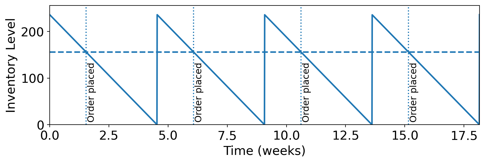
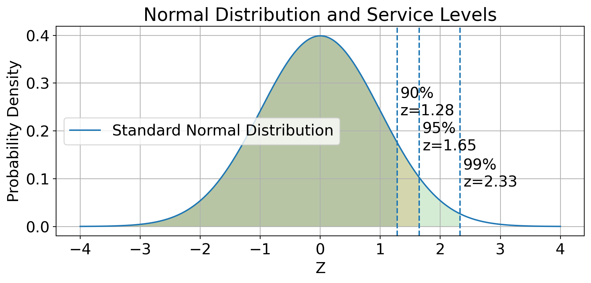
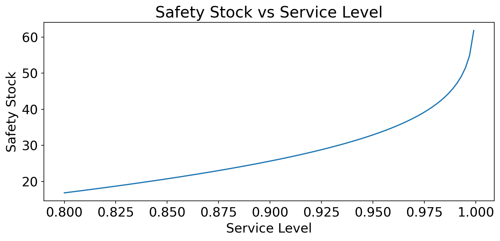

1.3 Service-Level Intuition (bridge from stochastic models)
Continuous Review (Q, R) System
2.1 Constant demand & constant lead time
2.2 Variable demand & constant lead time
2.3 Constant demand & variable lead time
2.4 Variable demand & variable lead time
Periodic Review (P) System
3.1 Basic mechanics and order-up-to level
3.2 Worked Example: Bird Feeder Company
Choosing Between Q and P
4.1 Comparison and decision rules
4.2 Summary and key formulas
Single-Period Normal-Demand Model (Newsvendor)
5.1 Critical ratio and optimal order quantity
5.2 Expected cost under normal demand
5.3 Worked example and interpretation
1. EOQ Reorder Point Review
Goal: Decide how much to order and when to order.
EOQ gives order size; ROP gives order timing.
\[
\boxed{ROP = d \times L}
\]
where \(d\) is demand rate and \(L\) is lead time.

1.1 Basic EOQ and ROP
For annual demand \(D\), ordering cost \(K\), and annual holding cost \(h\):
\[
\boxed{Q^* = \sqrt{\frac{2KD}{h}}}
\]
\(Q^*\) optimal batch size to minimise total cost.
EOQ does not include safety stock; it is the ideal order quantity under deterministic assumptions.
Then,
\[
ROP = d \times L
\]
\(ROP\) protects demand during replenishment lead time.
What happens if lead time doubles?
1.2 Worked Example: Carpet Store
The carpet store wants to determine the optimal order size and total inventory cost given an estimated demand of 10,000 yards of carpet, an annual carrying cost of $0.75 per yard, and an ordering cost of $150. The store would also like to know the number of orders that will be made annually and the time between orders (i.e., the order cycle) given that the store is open 311 days per year. The lead time to receive an order is 10 days, determine the reorder point for carpet.
\(\bar{d}\) is average demand rate during lead time.
\(\sigma_d\) is standard deviation of demand per time unit.
\(\bar{d}L\) covers expected lead-time demand.
\(SS\) buffers demand variability during lead time.
\(z\) corresponds to the desired service level.

\(z\) corresponds to the desired service level.
Higher \(z\) means more safety stock and higher service level.
The value of \(z\) can be found from standard normal distribution tables based on the target service level (e.g., 1.28 for 90%, 1.645 for 95%, 2.33 for 99%).

The relationship between service level and safety stock is nonlinear.
As service level approaches 100%, the required safety stock increases dramatically.
This is because the tail of the normal distribution becomes thinner, requiring more inventory to cover rare demand spikes.
2.2 Worked Example: Bird Feeders
Suppose that the average demand for bird feeders is 18 units per week with a standard deviation of 5 units. The lead time is constant at 2 weeks. Determine the safety stock and reorder point for a 90 percent cycle-service level.
\(\sigma_{LT}\) is standard deviation of lead time.
Example: A store sells about 10 digital cameras a day. Lead time For camera delivery is normally distributed with a mean time of 6 days and a standard deviation of 3 days. A 95% service level is set. Find the reorder point.
Sometimes written as \(SS = z\sigma_{dL}\) where \(\sigma_{dL}\) is the combined standard deviation of demand during lead time.
Example: A store’s most popular item is 9-volt battery. About 150 batteries are sold per day, following a normal distribution with a standard deviation of 16 batteries. Batteries are ordered from an out-of-state distributor; lead time is normally distributed with an average of 5 days a standard deviation of 1 day. To maintain a 95% service level, what ROP is appropriate?
Exercise: Grey Wolf Lodge is a popular 500-room hotel in the North Woods. Managers need to keep close tabs on all room service items, including a special pine-scented bar soap. The daily demand for the soap is 275 bars, with a standard deviation of 30 bars. Ordering cost is $10 and the inventory holding cost is $0.30/bar/year. The lead time from the supplier is 5 days, with a standard deviation of 1 day. The lodge is open 365 days a year.
What is the economic order quantity for the bar of soap?
What should the reorder point be for the bar of soap if management wants to have a 99 percent cycle-service level?
What is the total annual cost for the bar of soap, assuming a Q system will be used?
Given:
\(D=275 \times 365\), \(K=10\), \(h=0.30\),
\(\bar{d}=275\), \(\sigma_d=30\), \(\bar{L}=5\),
\(\sigma_L=1\), service level = 99% so \(z=2.33\).
where \(SS = z \times \sqrt{\sigma_d^2(T+\bar{L})+ \sigma_{LT}^2\bar{d}^2}\)
3.2 Worked Example: Bird Feeder Company
A bird feeder company uses a periodic review (\(P\)) inventory system. Weekly demand is normally distributed with an average of 30 units and a standard deviation of 10 units. The supplier lead time is 2 weeks, and the company operates year-round (52 weeks annually). The system specifies an EOQ of 75 units and maintains safety stock to achieve a 95% cycle-service level. Determine the review period \(P\) and the targeted inventory level \(TIL\) for this system.
Review period \(P\)
Given EOQ = 75 units, average period demand \(\bar{d}=30\;\) units
\(\displaystyle P = \frac{EOQ}{\bar{d}} = \frac{75}{30} = 2.5\;\) weeks
Targeted inventory level \(TIL\)
\(SS = z \sigma_d \sqrt{P+L} = (1.645)(10)(\sqrt{2.5+2}) =34.8957\quad\) units
\(TIL= \bar{d} \times (P+L) + SS = (30)(2.5+2) + 34.8957=169.8957\quad\) units
4. Choosing Between Q and P
Both systems use service level and safety stock ideas.
Main design difference is review cadence and order quantity behavior.
Selection should reflect data quality, IT capability, and operational rhythm.
Feature
Continuous (Q, R)
Periodic (P)
Review frequency
Continuous
Every \(P\) time units
Order size
Fixed (\(Q\))
Variable
Reorder trigger
Inventory position reaches \(R\)
Scheduled review
Typical safety stock
Lower
Higher
Monitoring effort
Higher
Lower
Decision rules
Use Q-system for high-value or critical items.
Use P-system when orders are synchronised on fixed schedules.
Takeaway: EOQ sets size, ROP/TIL set timing and protection.
5. Single-Period Normal-Demand Model (Newsvendor)
Motivation
The newsvendor model is a classic framework for inventory decisions when demand is uncertain and the selling season is short. It applies to products that have a single selling period, such as newspapers, fashion items, or perishable goods.
The key decision is how many units to order before the selling period begins, given that demand is random and that unsold inventory may have a salvage value, while unmet demand results in lost sales.
The model helps determine the optimal order quantity that minimizes expected costs or maximises expected profit, taking into account the trade-offs between ordering too much (overage) and ordering too little (underage).
Normal demand is often assumed for analytical tractability, allowing us to derive closed-form solutions for the optimal order quantity.